Markdown是一种轻量级标记语言，除了编辑文字外，还支持插入图片、表格、公式，它是很流行的一种文档编辑语言，很多博客平台都支持使用Markdown来编辑文章。Markdown还有一个好用的功能是画流程图，基于Mermaid库来渲染流程图，语法比较简洁，本文将介绍Markdown的Mermaid简单使用方法。
Mermaid 是一个基于 Javascript 的图表绘制工具，可用于创建流程图、时序图、甘特图、类图、状态图、饼图等。
Mermaid集成到了很多 Markdown 编辑器中，本文使用的是Typora编辑器，在代码块中编写Mermaid代码，编程语言名字设置为 mermaid 。
接下来介绍Mermaid语法。
流程图
1. 定义流程图节点及节点名称
1 | flowchart LR |
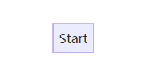
2. 定义流程图方向
可设置4个方向：
- TD - top-down，从上到下。或者使用TB（top to bottom）
- BT - bottom to top，从下到上
- RL - right to left，从右到左
- LR - left to right，从左到右
1 | flowchart TD |
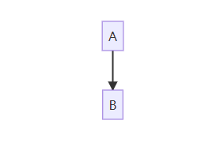
1 | flowchart LR |
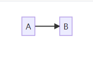
3. 节点形状
默认节点形状为长方形，也可以设置为其它形状。
1 | flowchart LR |
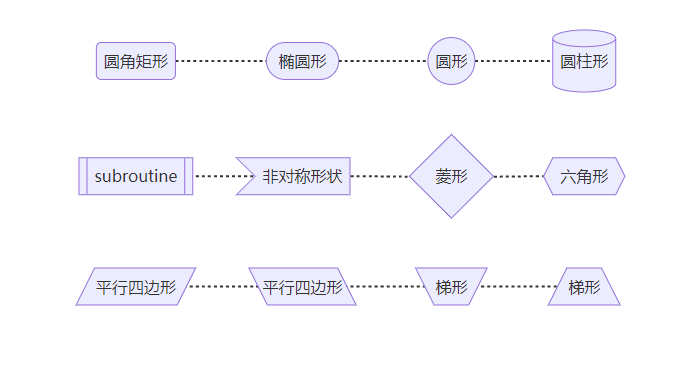
4. 节点连线
1 | flowchart LR |
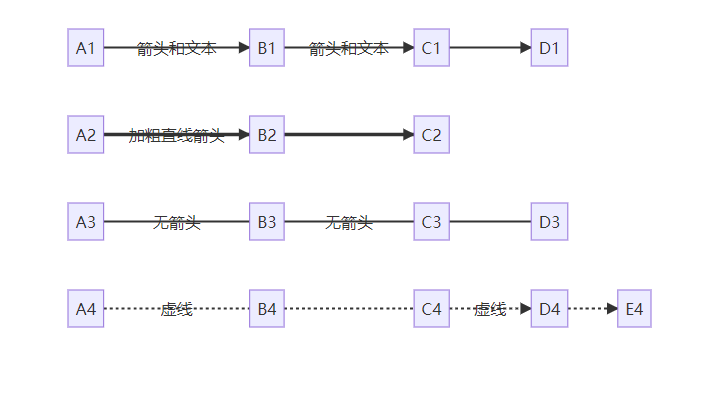
5. 多节点连接
1 | flowchart LR |
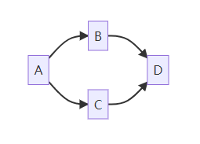
1 |
|
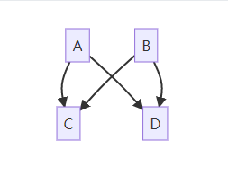
或者
1 | flowchart TD |
可通过增加短横线来增加连线长度。1
2
3
4
5
6flowchart TD
A[Start] --> B{Is it?}
B -->|Yes| C[OK]
C --> D[Rethink]
D --> B
B ---->|No| E[End]
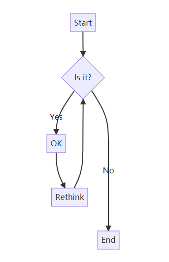
虚线或粗连线，可增加等号或点来延长连线：
| Length | 1 | 2 | 3 |
|---|---|---|---|
| 连线 | --- |
---- |
----- |
| 箭头 | --> |
---> |
----> |
| 加粗连线 | === |
==== |
===== |
| 加粗箭头 | ==> |
===> |
====> |
| 虚线 | -.- |
-..- |
-...- |
| 虚线箭头 | -.-> |
-..-> |
-...-> |
6. 其它类型箭头
1 | flowchart LR |
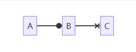
1 | flowchart LR |
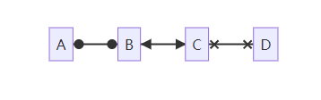
7. 特殊字符
如果文本中有字符可以用双引号：1
2flowchart LR
A["括号 (text)"]
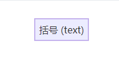
1 | flowchart LR |
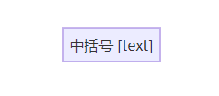
如果文本中要使用双引号或者其它更多特殊字符，可以使用HTML 实体来表示：1
2flowchart LR
A["引号#quot;"]
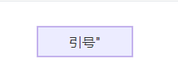1
2flowchart LR
A["美元符号#36;"]
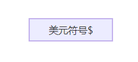1
2flowchart LR
A["笑脸#128512;"]
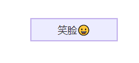
更多HTML字符可参考https://www.w3school.com.cn/charsets/index.asp
8. 子图
1 | flowchart TB |
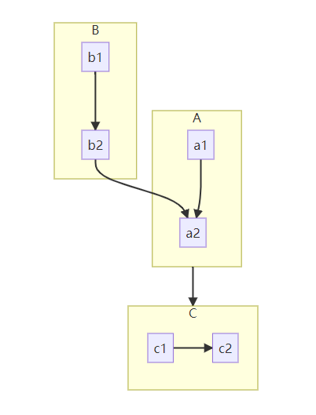
可以通过设置样式来设置流程图边框，具体设置方法可参考：https://mermaid-js.github.io/mermaid/#/flowchart
时序图
举几个时序图的例子：
1 | sequenceDiagram |
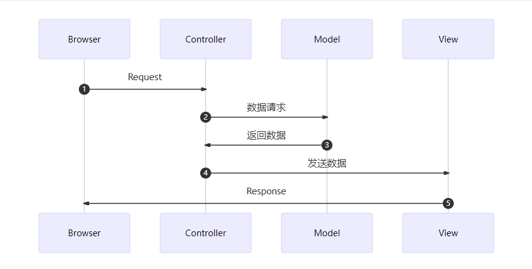
1 | sequenceDiagram |
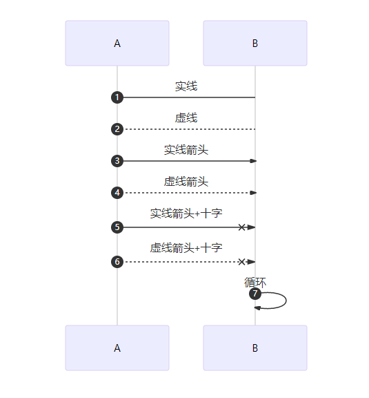
类图
Mermaid也支持类图，https://mermaid-js.github.io/mermaid/#/classDiagram：
1 | classDiagram |
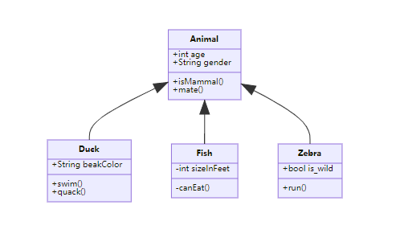
状态图
Mermaid状态图语法和plantUml一样。
1 | stateDiagram-v2 |
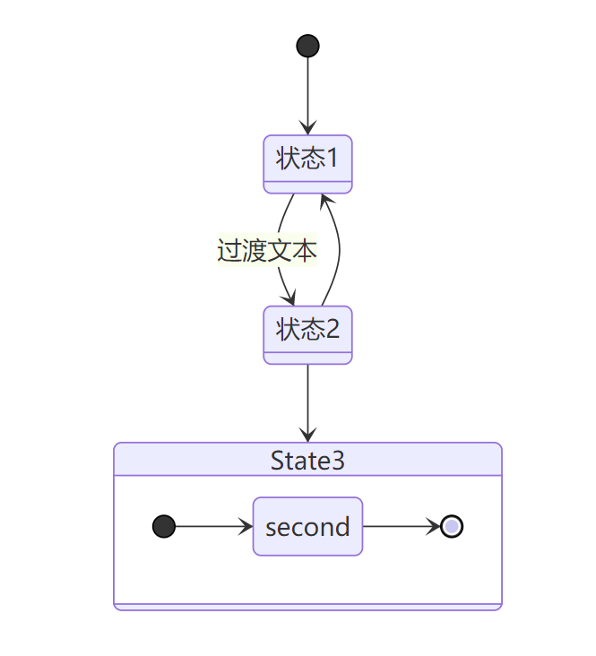
甘特图
甘特图例子：
1 | gantt |
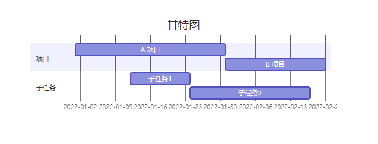
饼图
Mermaid可以用来渲染饼图：
1 | pie title 标题 |
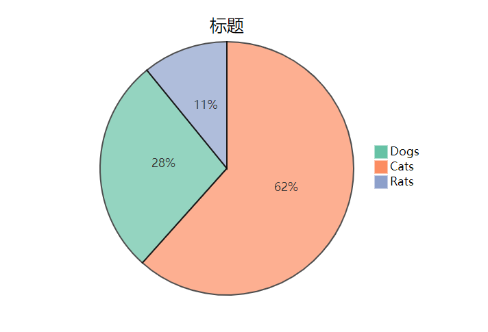
Mermaid除了可以渲染流程图、时序图、甘特图、类图、状态图和饼图外，还可以用来画实体关系图、需求图等，更多语法课参考官方文档：https://mermaid-js.github.io/mermaid/#/ 。
本文标题:markdown图表语法Mermaid介绍
文章作者:hiyo
文章链接:https://hiyongz.github.io/posts/markdown-syntax-for-flowchart2/
许可协议:本博客文章除特别声明外，均采用CC BY-NC-ND 4.0 许可协议。转载请保留原文链接及作者。